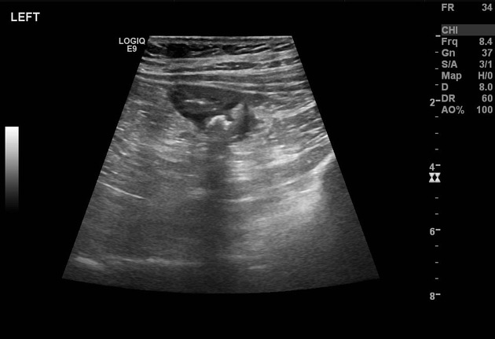

The Acoustic Shadow
Global Locations — 2016 - 2026

The Event
US diplomats and intelligence officers across the globe have reported sudden, debilitating neurological symptoms, often accompanied by piercing directional noises. Known as 'Havana Syndrome,' the phenomenon has sparked intense debate over the existence of targeted energy weapons. Despite hundreds of reported cases, the exact mechanism of delivery remains classified or unknown.
Evidence Locker


Current Theories
The Archive examines the intersection of high-frequency technology and modern warfare.
- Pulsed Microwave Energy Evidence suggests the symptoms could be caused by pulsed radiofrequency energy, potentially delivered by covert, handheld devices.
- Acoustic Espionage The incidents may be the byproduct of high-powered surveillance equipment that inadvertently causes biological damage during data interception.